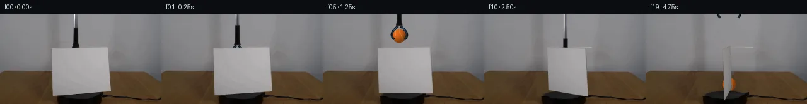

![首帧]()

Round 00
2026-11-04T19:16:42.699535+00:00像素候选变化代码 +282/−0inspection 更新
pixels 1df827511c1fda4d · code d6cdf28bac4a205c
查看本轮 generate.py 真实 diff
--- previous/generate.py
+++ current/generate.py
@@ -0,0 +1,282 @@
+"""Local pixel synthesis: source texture warps, numeric inpainting, analytic geometry.
+No image viewing, learned model, network, simulator, or external scene input.
+"""
+from pathlib import Path
+import json
+import numpy as np
+from PIL import Image, ImageDraw
+import cv2
+from scipy.ndimage import gaussian_filter
+from artifact_io import save
+
+ROOT = Path(__file__).resolve().parent
+SOURCE = np.asarray(Image.open(ROOT / 'first_frame.png').convert('RGB'))
+H, W = SOURCE.shape[:2]
+S = 4
+Y, X = np.mgrid[:H*S, :W*S].astype(np.float32)
+X = (X + .5) / S - .5
+Y = (Y + .5) / S - .5
+SOURCE_QUAD = np.float32([[81.6,54.5],[172.1,52.15],[175.25,122.7],[83.5,130.4]])
+WORLD_QUAD = np.float32([[-1,1],[1,1],[1,0],[-1,0]])
+PROJ = cv2.getPerspectiveTransform(WORLD_QUAD, SOURCE_QUAD)
+# The additional projection column supplies the depth direction for yaw.
+DEPTH_COLUMN = PROJ[:,2] * -.105 + np.array([2.1,10.2,0.])
+
+
+def reduce(a):
+ return cv2.resize(a, (W,H), interpolation=cv2.INTER_AREA)
+
+
+def polygon_alpha(points):
+ im = Image.new('L',(W*S,H*S))
+ draw = ImageDraw.Draw(im)
+ draw.polygon([((float(x)+.5)*S,(float(y)+.5)*S) for x,y in points],fill=255)
+ return np.asarray(im).astype(np.float32)/255
+
+
+def composite(base, color, alpha):
+ if alpha.shape != (H,W):
+ prem = reduce(color * alpha[...,None])
+ alpha = reduce(alpha)
+ else:
+ prem = color * alpha[...,None]
+ return base * (1-alpha[...,None]) + prem
+
+
+def quad_at(angle):
+ q = []
+ for u,v in WORLD_QUAD:
+ p = PROJ[:,0]*u*np.cos(angle) + DEPTH_COLUMN*u*np.sin(angle) + PROJ[:,1]*v + PROJ[:,2]
+ q.append(p[:2]/p[2])
+ return np.float32(q)
+
+
+# Build a background plate exclusively inside the moving object's source footprint.
+# The wall uses measured scanline gradients; tabletop grain comes from same-row
+# source pixels to either side. These are inferred pixels, not observed scenery.
+def background_plate():
+ a=SOURCE.astype(np.float32)
+ yy,xx=np.mgrid[:H,:W]
+ plate=a.copy()
+ base_wall=np.median(a[46:52],axis=0)
+ for x in range(112,128):
+ f=(x-111)/17
+ base_wall[x]=base_wall[111]*(1-f)+base_wall[128]*f
+ left=np.median(a[:,76:80],axis=1)
+ right=np.median(a[:,179:184],axis=1)
+ for y in range(54,96):
+ f=np.clip((np.arange(W)-79)/101,0,1)[:,None]
+ dl=left[y]-left[50]
+ dr=right[y]-right[50]
+ plate[y]=base_wall+dl[None,:]*(1-f)+dr[None,:]*f
+ # Source table samples retain the small photographic grain.
+ for y in range(90,H):
+ for x in range(80,178):
+ boundary=91.4+.008*(x-130)
+ blend=np.clip((y-boundary+.4)/1.7,0,1)
+ lx=(x-80)%70+6
+ rx=180+(x-80)%60
+ weight=(x-80)/98
+ wood=a[y,lx]*(1-weight)+a[y,rx]*weight
+ # Slightly darker table under and immediately behind the apparatus.
+ wood*=1-.07*np.exp(-((x-123)/33)**2)
+ plate[y,x]=plate[y,x]*(1-blend)+wood*blend
+ # Inferred hidden portion of the existing shallow black turntable.
+ disk=((xx-126.0)/35.2)**2+((yy-129.4)/6.9)**2
+ disk_alpha=np.clip((1-disk)*4,0,1)
+ disk_rgb=np.zeros_like(a)+np.array([29,28,29])
… diff truncated; 195 more lines …